My Mods for Star Wars: Knights of the Old Republic
Categories:
Player & Party Members
Juhani Dialogue Restoration
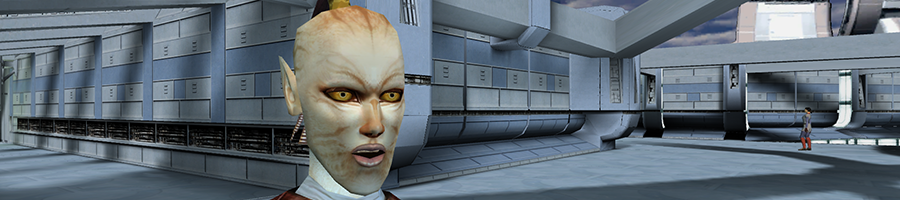Restores Juhani's conversations with the player that are unused or easy to miss in vanilla KotOR.
Deadly Stream Nexus ModsCarth Onasi and Male PC Romance
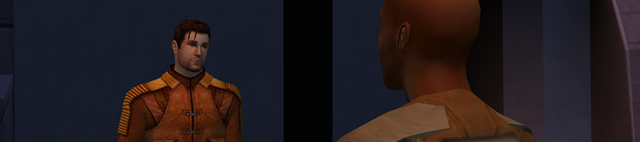Makes Carth Onasi's romance subplot available for male player characters.
Deadly Stream Nexus ModsBastila and Carth Romance Removal
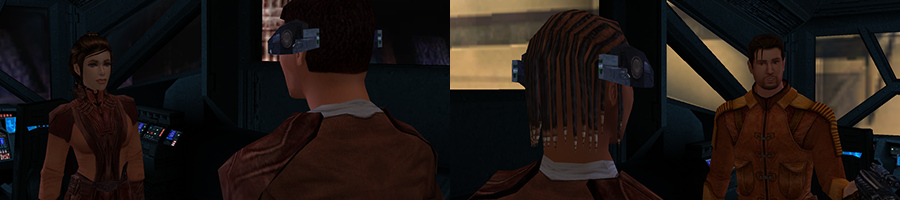Removes Bastila and Carth's romance by removing all romance-related dialogue from their conversations.
Deadly Stream Nexus ModsLeilukin's Juhani's Outfit Reskin Pack
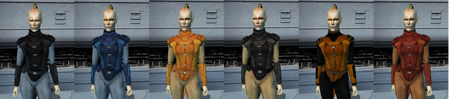Reskins Juhani's outfit by changing the outfit's color scheme, with multiple versions of reskin provided.
Deadly Stream Nexus ModsJolee in Unique Outfit Introduction
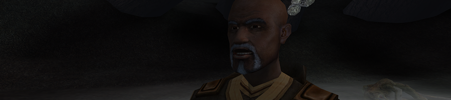Makes Jolee Bindo wear his signature robe when you meet him on Kashyyyk, before he joins your party.
Deadly Stream Nexus ModsKotOR 1 Improved Party Outfits
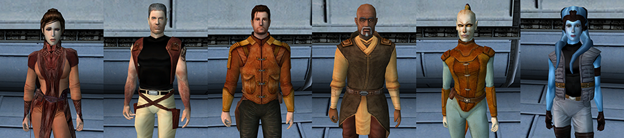Adds new items to improve the properties of the default outfits of the human and humanoid party members of TSL, namely Bastila, Canderous, Carth, Jolee, Juhani and Mission.
Deadly Stream Nexus ModsDarth Revan Texture for Star Forge Robes
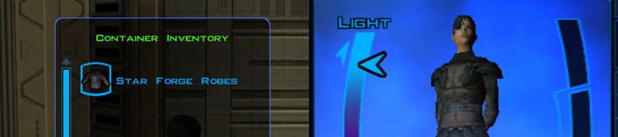Makes the Star Forge Robes to have the same texture and inventory icon as Darth Revan's Robes.
Deadly Stream Nexus ModsNon-Playable Characters
KotOR 1 Twi'lek Male NPC Diversity
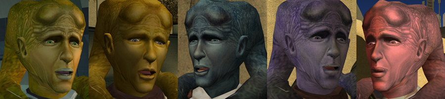Diversifies the appearances of Twi'lek male NPCs in KotOR 1 by giving the named Twi'lek male NPCs different looks instead of the generic NPC looks.
Deadly Stream Nexus ModsKotOR 1 Twi'lek Female NPC Diversity
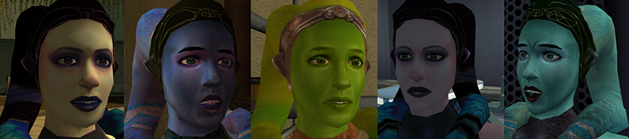Diversifies the appearances of Twi'lek female NPCs by giving the named Twi'lek female NPCs different looks instead of the generic NPC looks.
Deadly Stream Nexus ModsBelaya's Unique Look
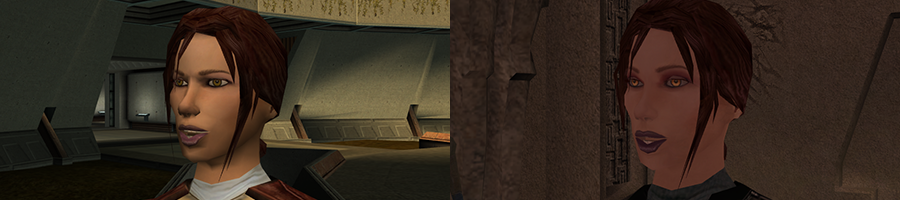Gives the NPC Belaya a unique look instead of a generic NPC look.
Deadly Stream Nexus ModsHuman Xor Restoration
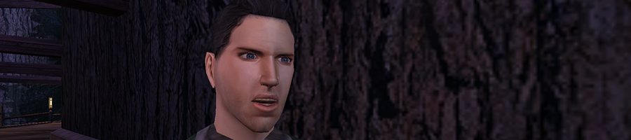Restores the original appearance of the NPC Xor in the Xbox version of KotOR, by changing his species from a Twi'lek to a human.
Deadly Stream Nexus ModsHuman Xor Unique Look
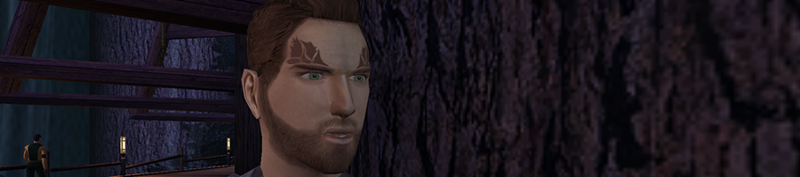Changes the NPC Xor's appearance by making him a human with a unique look to make him different from other human NPCs.
Deadly Stream Nexus ModsKotOR 1 No Gendered Dialogue from Male NPCs
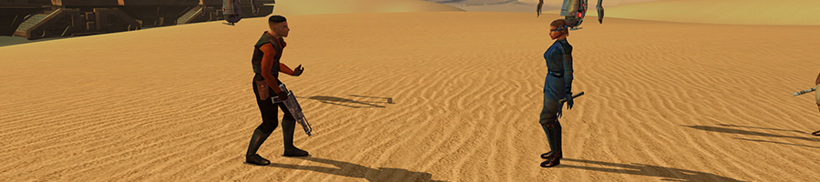Removes male NPC dialogues that involve them flirting with female player characters or remarking on the female PC's gender or appearance.
Deadly Stream Nexus ModsPC Dialogue with Davik's Slaves Change
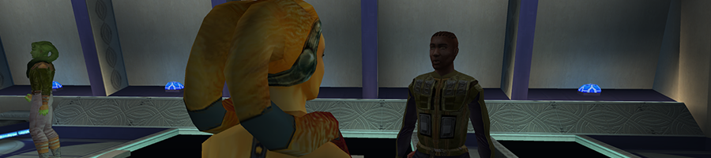Removes the option for the player character to flirt with Davik Kang's slaves, or give the player Dark Side options for requesting a massage from the slaves. Threatening the slaves also gives the player Dark Side points.
Deadly Stream Nexus ModsGameplay
Trask Ulgo Without Tutorials
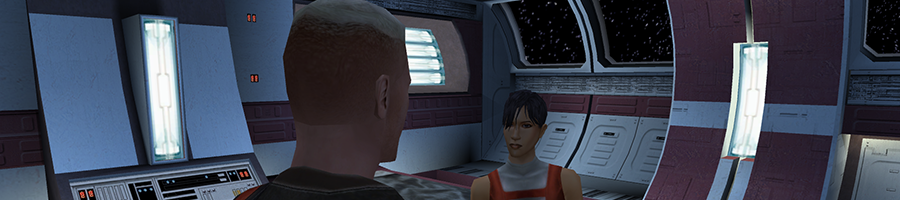Removes the tutorial elements from the game, while keeps Trask Ulgo as a party member in the first area of the Endar Spire.
Deadly Stream Nexus ModsMusic
Mysterious Box Music for Unknown World
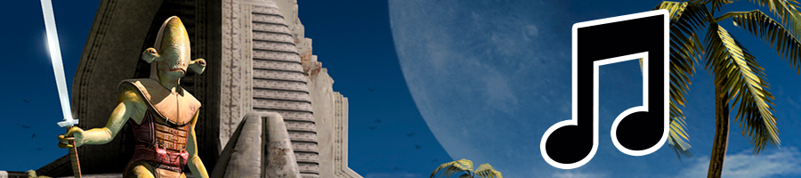This mod will make the Mysterious Box's ambient music played in some areas of the Unknown World.
Deadly Stream Nexus Mods